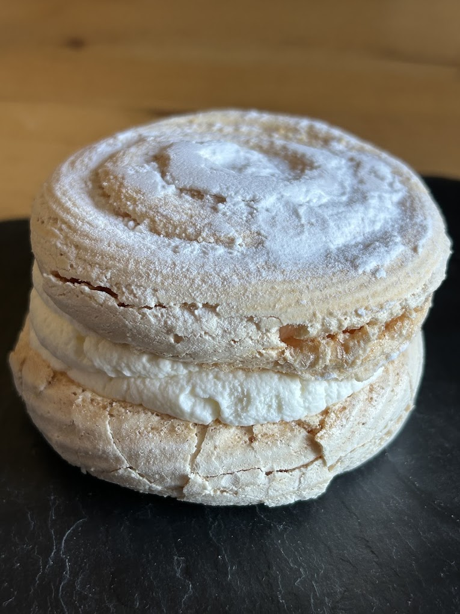
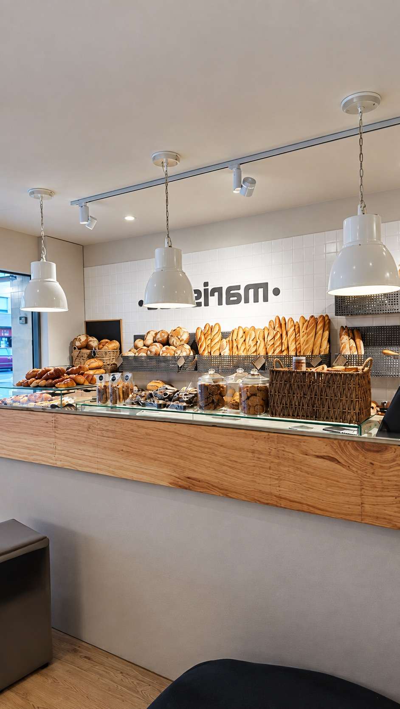
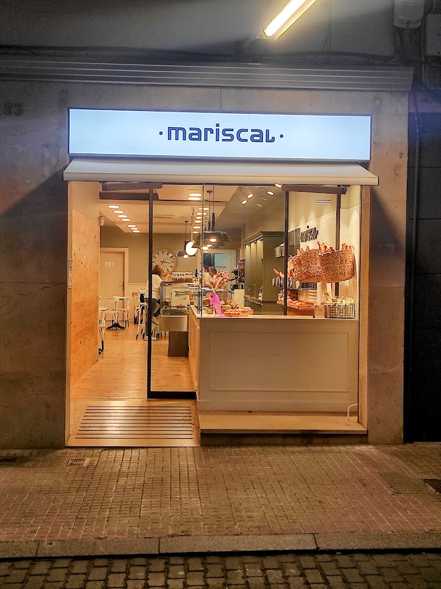
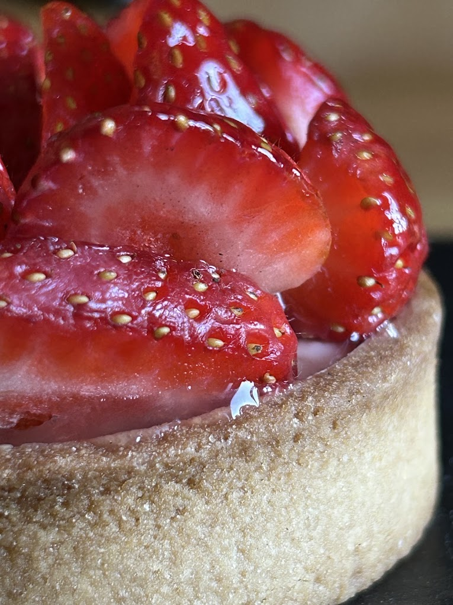
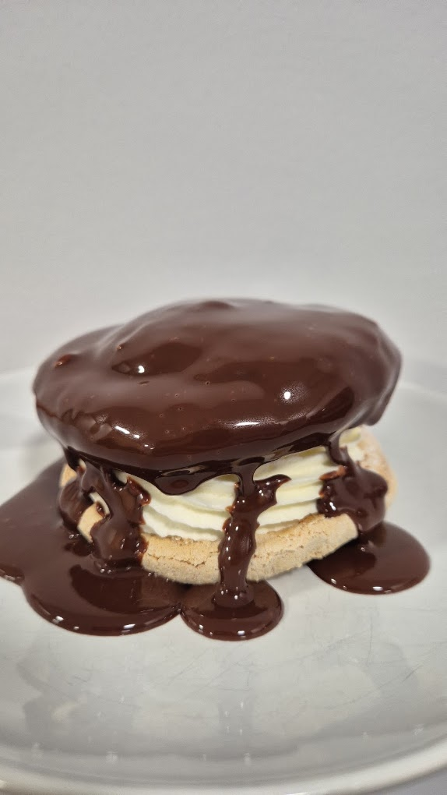

El merengue que se deshace en la boca
Claras, azúcar y horas de horno bajo. Dos discos crujientes y una nata ligera en medio.
Pastisseria artesana · Terrassa


Quiénes somos
Mariscal es una pastelería y panadería artesana de Terrassa. Trabajamos con tiempo, con manos y con producto de temporada, porque creemos que un buen postre se nota en el primer bocado.
Desde nuestro obrador salen cada día el pan, la bollería, las tartaletas y los postres individuales que luego encontrarás en el mostrador. Sin prisas ni atajos: mantequilla de verdad, fruta fresca, chocolate de calidad y recetas que se afinan con los años.
Pasa a desayunar, a merendar o a llevarte algo dulce a casa. Tenemos mesas, buen café y el mismo cuidado en cada detalle.
Elaborado a mano en nuestro obrador, en pequeñas tandas.
Fresas en primavera, castañas en otoño. La fruta marca la carta.
Tartas, encargos y detalles para celebraciones. Pregúntanos en tienda.
Comer allí, para llevar y a domicilio desde Abat Marcet.
Del obrador
Historias cortas sobre lo que estamos haciendo ahora mismo entre hornos y mostrador.

Claras, azúcar y horas de horno bajo. Dos discos crujientes y una nata ligera en medio.

Masa sablée, crema suave y fruta fresca cortada a mano, una a una.

Una cobertura de chocolate brillante que cae despacio sobre la nata. Mejor en el momento.
Lo que dicen de nosotros
Buen sitio para desayunar, muy atentos y amables. Buena relación calidad-precio.
Fuimos a desayunar y el producto es de muy buena calidad.
Los postres individuales, muy recomendables.